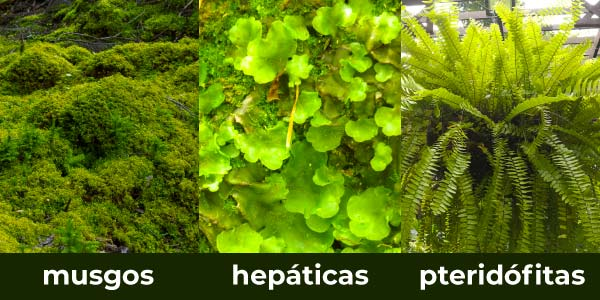
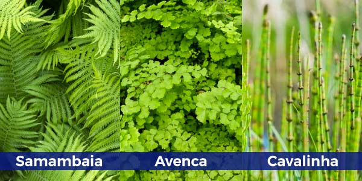
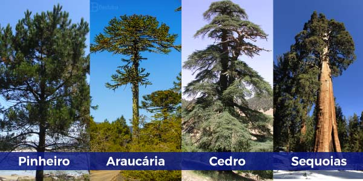
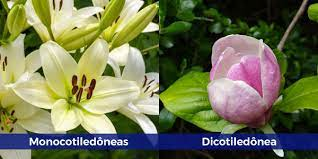

São plantas avasculares e que não possuem caule, folhas ou raízes verdadeiras. A presença de flores, sementes e frutos também não é observada. Dependem da água para a reprodução. A fase dominante do seu ciclo de vida é o gametófito. São exemplos de briófitas: musgos, antóceros e hepáticas.
São plantas vasculares que não produzem flores, sementes ou frutos. Possuem raízes, caule e folhas verdadeiras. Dependem da água para a reprodução. A fase dominante do seu ciclo de vida é o esporófito. Como exemplo, temos as samambaias e avencas.
São plantas vasculares que apresentam raízes, caule, folhas e sementes. As sementes são nuas, pois não possuem frutos envolvendo-as. Nessas plantas também não são encontradas flores, sendo a estrutura reprodutiva desse grupo chamada de estróbilo. Devido ao surgimento do tubo polínico, não necessitam de água para a reprodução. A fase dominante do seu ciclo de vida é o esporófito.
São plantas vasculares que possuem raízes, caule, folhas, sementes, flores e frutos. Não necessitam de água para a reprodução, e a fase dominante do seu ciclo de vida é o esporófito. Nesse grupo temos cerca de 90% de todas as espécies de plantas do planeta.
